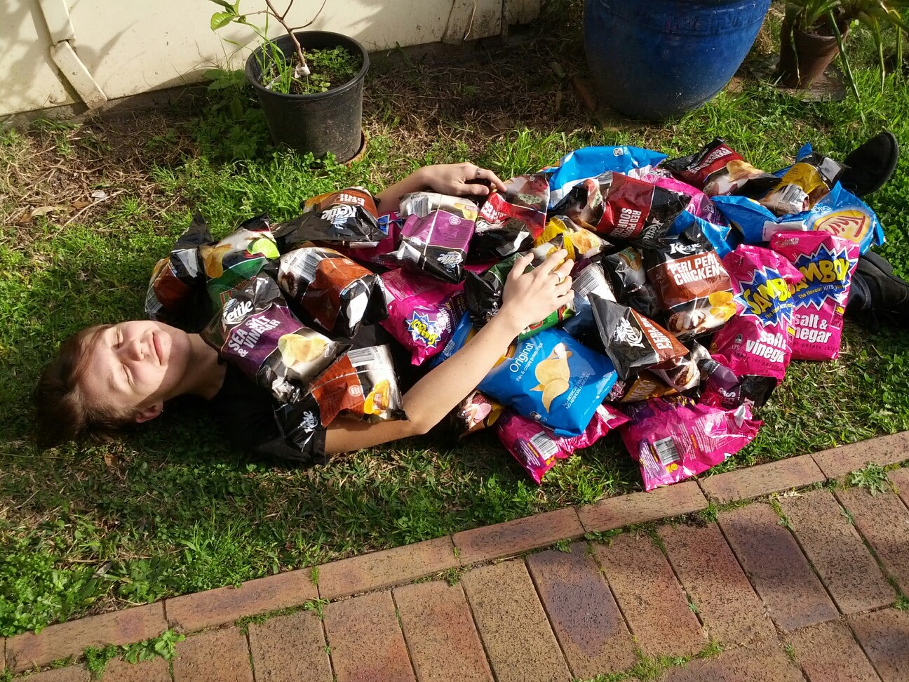
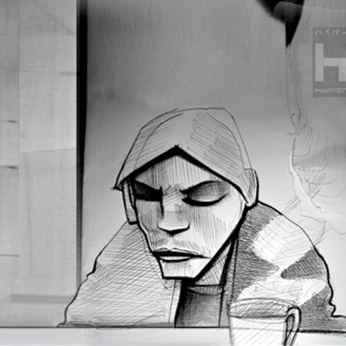

Ollie
TOC:
About Me
I live in Melbourne, Australia with my partner.
You may know me by the names Daniel or Cera.
Born 1988 in Glenrowan, Victoria. I've lived in Wangaratta, Sydney, Hobart and Melbourne.
We have two dogs: an Italian Greyhound and a Daschshund.
Contact
- Email: oliver dot davies dot jar at gmail dot com
- Twitter: @Ollie_Bun
- GitHub: @olliebun
My Work
I'm a self-taught back-end Software Developer working at a Logistics firm. No tertiary education.
I've had a >10 year career jumping sectors between marketing, education, renewable energy and telcos.
Excellence & empathy is the goal. Quality first. People over tools. Having said that, I love: golang, python, linux, postgres, git, AWS, testing in production
I love Accelerate. I hate "Agile Methodology".
I used to be quite involved in open source & infosec. I went to Linux Conf AU and PyCon AU for a number of years.
"Gender", "Transition"
I am a detransitioner. I identified as a woman and was on HRT 2015-2021.
I do not and did have gender dysphoria. I am passionately against the affirmative care model, and the ongoing replacement of science & medicine with ideology when it comes to trans care and policy.
I try to tell my story with respect and humility.
My "gender journey" (🙄) started back in 2012. There remain trans people close to me.
I don't consider challenge an attack, and welcome discussion with anyone on this subject.
Snapshot of my journey of receiving "gender-affirmative care"
— Ollie 🌽🪩 (@Ollie_Bun) August 10, 2022
2011: on King St, Newtown. I'd never questioned my gender.
2018: Peak gender euphoria after many told me I was trans and through a perfect storm I latched onto the idea.
2019: Questioning it all.
2022: Freedom. pic.twitter.com/1fiZhtbFKU
I don’t know why people are surprised to hear from detransitioners that our broken health system fails at informed consent and duty of care. Why is this controversial? Why are so many people who aren’t themselves medicalised trans people so upset by this being said?
— Ollie 🌽🪩 (@Ollie_Bun) July 11, 2022
Music
Some quick music picks.
- Andra Day - "Rise Up" (Live in Studio)
- That's Life - Frank Sinatra
- Center Your Love - Machinedrum
- NGL - BAYANG (the Bushranger)
- Firestarter - The Prodigy
- All the Way Down - Kelelas
The Spirit
Prisoner of Chips
I am the prisoner of chips. They are my favourite food. I have held this title since 2012 and not come across a serious contentor.
 Page hosted by GitHub Pages. Source: @olliebun/olliebun.github.com